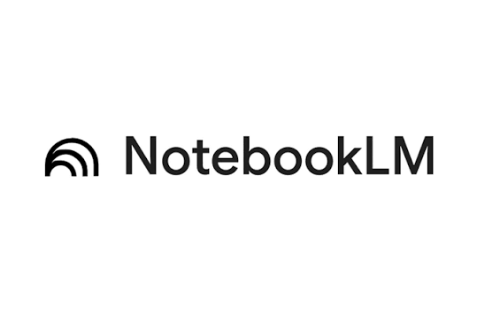
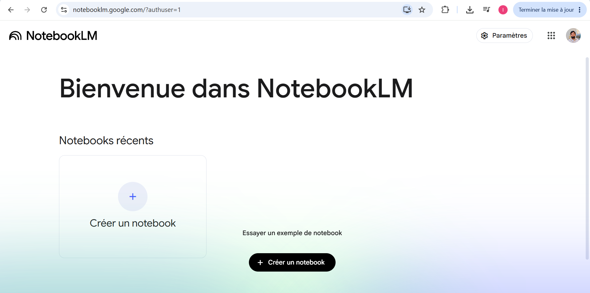
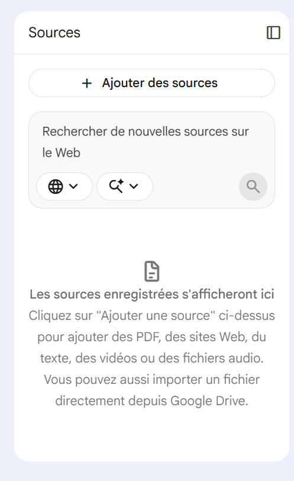
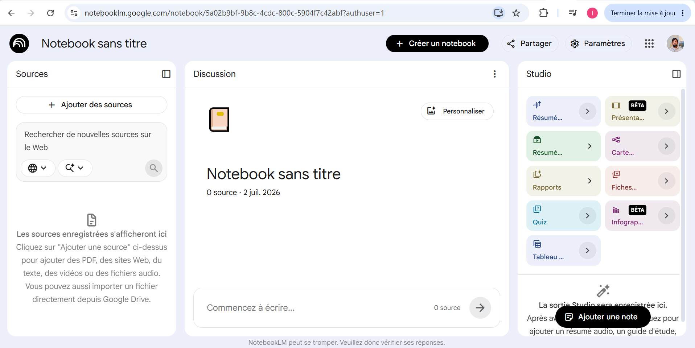
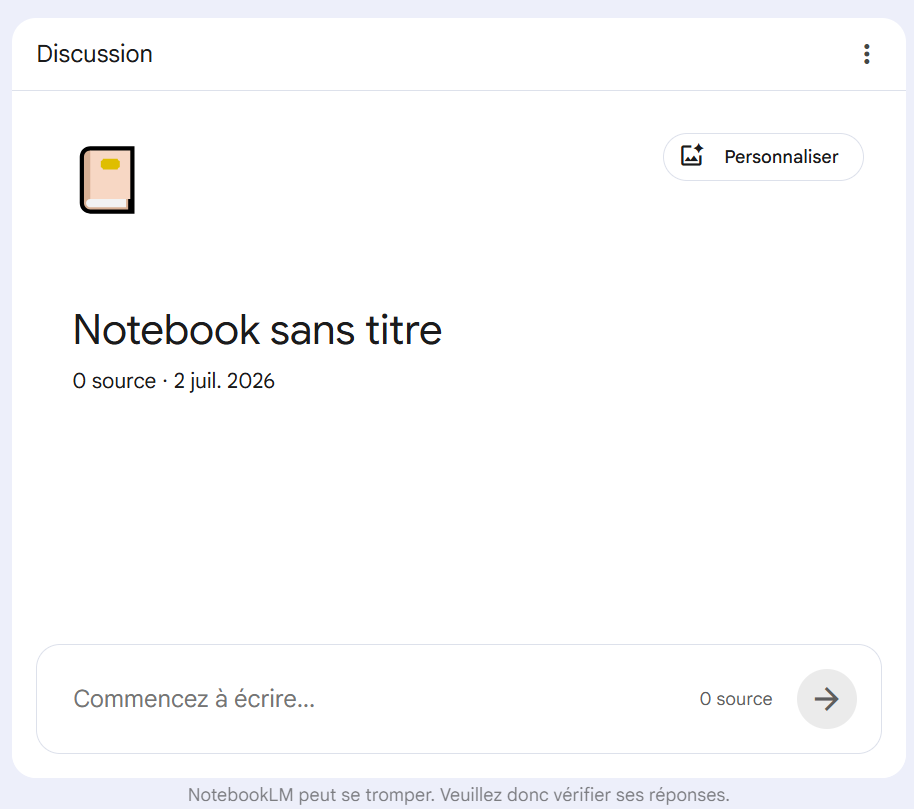
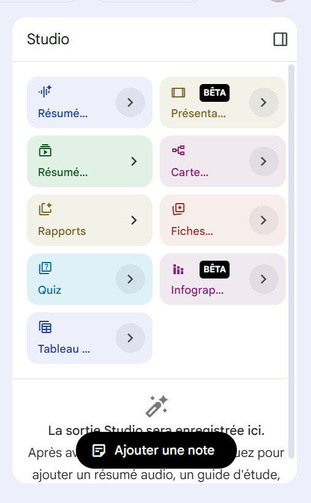
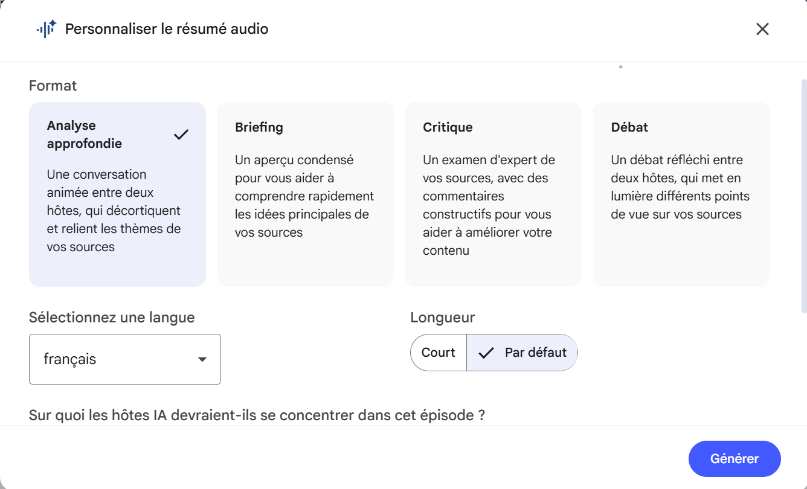

// Formateurs PIXNotebookLM change fondamentalement la façon dont vos apprenants peuvent synthétiser des documents, croiser des sources et générer de la connaissance. En tant que formateurs PIX, découvrez l'outil qui bouscule les compétences informationnelles.
L'interface d'accueil de NotebookLM brille par sa simplicité. Un hub centralisé où chaque projet est un "Notebook" (un cahier d'étude) étanche, garantissant la confidentialité absolue des données injectées.


PDF, sites web, vidéos YouTube, fichiers audio ou Google Drive... NotebookLM n'invente rien : il s'ancre strictement sur les documents que vous lui fournissez pour éliminer les hallucinations.
L'interface se divise dynamiquement en trois piliers : la gestion de vos sources à gauche, l'espace de discussion central intelligent, et le Studio de création à droite.



En un clic sur le menu de droite, transformez vos sources brutes en Quiz d'évaluation, en fiches de synthèse, en rapports structurés ou en présentations de cours claires.
Idéal pour faire travailler la vérification d'informations, l'évaluation de la fiabilité des sources et l'esprit critique face aux synthèses automatiques.
La fonctionnalité phare : la création d'un podcast bidirectionnel ultra-réaliste où deux voix IA débattent de vos documents. Vous pouvez en personnaliser la langue, la longueur, et le focus pédagogique (Analyse approfondie, Briefing, Critique ou Débat).
